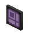

|  | ME Pattern Terminal |
A specialized version of the ME Crafting Terminal designed to encode Blank Patterns into Encoded Pattern.
Lets you browse the contents of your network like other terminals, but also contains a area for designing patterns. There are two modes for pattern encoding. Crafting Patterns, and Processing Patterns. Processing patterns are designed for use with machines that do not use standard crafting recipes; such as furances, or other machines. To select between modes, click the button to the right of the interface; when it shows a standard crafting table, it will create Crafting Patterns, and when it shows a furnace, it will create Processing Patterns.
For Crafting Patterns ("Crafts..."), you specify the input crafting materials on a standard 3x3 crafting grid, and the output materials are determined automatically.
For Processing Patterns ("Creates..."), you specify the input materials and output materials, including quantity, by placing stacks of items in the interface. If a processing operation is not guaranteed to succeed (such as secondary products from some machines), it will not work correctly as a Processing Pattern.
When designing crafting patterns you can click the output to extract a crafted item as long as you have the materials required to craft the item.
|
Shapeless
|
|
|
| Last modified on 11/10/2014 04:01 PM CST By seebs |